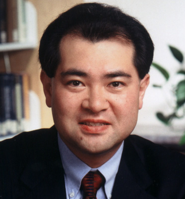

|  | Toru Iiyoshi
The Carnegie Foundation |
|
Bio: Toru Iiyoshi is a Senior Scholar at the Carnegie Foundation where he works as the Director of the Knowledge Media Laboratory (KML). At KML, he leads research and development efforts that take advantage of emerging technologies to enable educational institutions, programs, and faculty to transform the knowledge implicit in effective practice into ideas, theories, and resources that can be shared widely to advance teaching and learning. For example, KML is currently developing a distributable Sakai/IMS-compliant toolkit (http://www.cfkeep.org) to help various educational organizations and institutions advance this work. KML also works with several of the Foundation's programs to support and enhance various educational improvement and transformation efforts in partnership with other foundations such as Atlantic Philanthropies, Hewlett Foundation, Goldman Foundation, Mellon Foundation, and Pew Charitable Trusts. Iiyoshi also works with national and international initiatives and partners such as the Open Source Portfolio Initiative where he serves as a Board member, to provide his vision and leadership in the development and diffusion of innovative educational technology. He is also the Carnegie Foundation's SEPP Representative. Before joining the Carnegie Foundation in 1999, he was manager and a research scientist at the Learning and Performance Support Laboratory (LPSL) at the University of Georgia. At the LPSL, he directed several research and development projects emphasizing the innovative application of multimedia and network technology on the advancement of teaching and learning both in higher education and K-12. As a learning scientist and educational technology researcher, Iiyoshi received the Outstanding Practice Award in Instructional Development and the Robert M. Gagne Award for Research in Instructional Design from the Association for Educational Communications and Technology. His research focuses on design and evaluation of learning and teaching technologies, both for individual and collective knowledge acquisition and building. He has authored or co-authored dozens of academic and commercial articles, including "Building Knowledge for Teaching and Learning: The Promise of Scholarship in A Networked Environment" (2004) in Change Magazine, as well as three books including The Art of Multimedia: Design and Development of The Multimedia Human Body (1996), based on his work with NHK (Japan Broadcasting Corporation) as a Co-Director of a seven-year project to develop a large-scale, innovative educational multimedia system for learning human anatomy and physiology, which has received seven international awards including the Grand Award at the New York Festivals' Interactive Multimedia Competition. He is an educational technologist with a B.A. and M.Ed. in educational technology from International Christian University in Tokyo and a Ph.D. in instructional systems from Florida State University. Platform:
The newly established Sakai Foundation is now facing a golden opportunity to, as one prominent Sakai leader noted, "create a shared place that is wholly of, by, and for the educational and research community to coordinate a healthy ecosystem among all who wish to participate." But, what exactly does it take for us to accomplish this non-trivial task? What does "a healthy ecosystem" really mean to the whole Sakai community as well as to each individual community member and participating institution? How can we further sustain and expand this pioneer effort? What crucial changes do we need now and in the foreseeable future? Turning a corner from being an externally-funded, cross-institutional technology development project that has enjoyed both growth and success, like many of you, I see this election as an important touchstone for the Sakai community to put in place leadership that will have an impact on its future directions and agenda. A few key areas are described below to share my perspective on the course we should follow. 1. Ensuring Diversity and Neutrality for Further Growth. Firstly, diversity on the Sakai Foundation's Board of Directors will create a healthier ecosystem. For example, in addition to the current outstanding Board members who are primarily selected from the prestigious national and international universities and colleges that often have their own funded technology development projects and inevitable institutional agenda, the Sakai community could enormously benefit from having a Board member from other non-profit educational organizations that share mutual visions and goals. Having a non-profit organization's representative could support the Board in making less political and more eclectic decisions that would attract more and more universities, colleges, and allied commercial vendors that would both contribute to and benefit from Sakai's efforts. That is part of the reason why I think my candidacy is unique and compelling; I do not speak for a particular university/college nor project/initiative, but instead represent an accomplished research foundation whose only mission is to serve the entire educational community for the improvement of teaching and leaning. My personal commitment to this mission is as fervent as the Carnegie Foundation's, and my basis of decision-making on the Board would not be influenced by a particular institution's or group's agenda, but rather by the real needs and hopes of the entire Sakai community. Thus, having me serve as a Board member should help maintain the necessary neutrality of the leadership, resolve critical issues and conflicts among the community, and advance Sakai's important efforts in collaboration with other leading educational efforts. 2. Going Beyond Technology Development to Make the Sakai Community Stronger. Secondly, the Sakai leadership should confront the "clear and present danger" that the Sakai community is encountering. While Sakai's major focus should remain to support its community in technology development, if we failed to expand Sakai's visions and scope beyond that, we would be likely to lose this game to "soon-to-be bigger and more dominant" BlackBoard with its army of full-time staff to do strategic planning, technology development, quality assurance, user/customer support, and marketing. This is why I firmly believe that the Sakai Foundation should support and coordinate efforts more actively to build a sustaining community of institutions and individuals who are truly committed to the advancement of teaching, learning, and research through innovative technologies, pedagogies, and ideas. I am part of that broader, diverse community, and ready to promote and coordinate this significant effort with other enthusiastic leaders in the Sakai community. Living in the world of open sharing and free competition, we all know that a company like BlackBoard could build Sakai-based or "Sakai-like" products. However, one of the Sakai community's possible and distinctive advantages, with its distributed intelligence and wisdom, is that it could help provide individual institutions and faculty with not just technically but also pedagogically optimal solutions through its collective sharing of local and global knowledge and experience in effective practices. This is almost impossible for a single giant "profit-driven" educational software company to take on. 3. Supporting the Community of Practice and Innovation. Finally, building upon my second point, in order to move Sakai's efforts forward, it is vital to continue developing a better support structure for sharing ideas, experiences, innovations, and challenges to help build collective educational knowledge around the pedagogical use of the Sakai technology. Despite the fact that the "invisibility" and "complexity" of teaching and learning often makes the task of "sharing educational knowledge" daunting, both technically and intellectually, there are many possibilities for this work to further promote the effective and innovative use of the Sakai tools as well as to continuously improve their quality. Over the past several years, working with my colleagues at the Carnegie Foundation, the Open Source Portfolio Initiative, and other initiatives, I have passionately devoted myself to helping many institutions, faculty, and students advance their teaching and learning by enabling them to learn from each other's effective practices through the use of innovative technologies. If elected, I would like to apply my experience, expertise, and enthusiasm to help the Sakai community build necessary capacity and sustainability to further advance its important mission and efforts. Thank you for considering my candidacy. I look forward to serving each of you as well as the entire Sakai community. | |